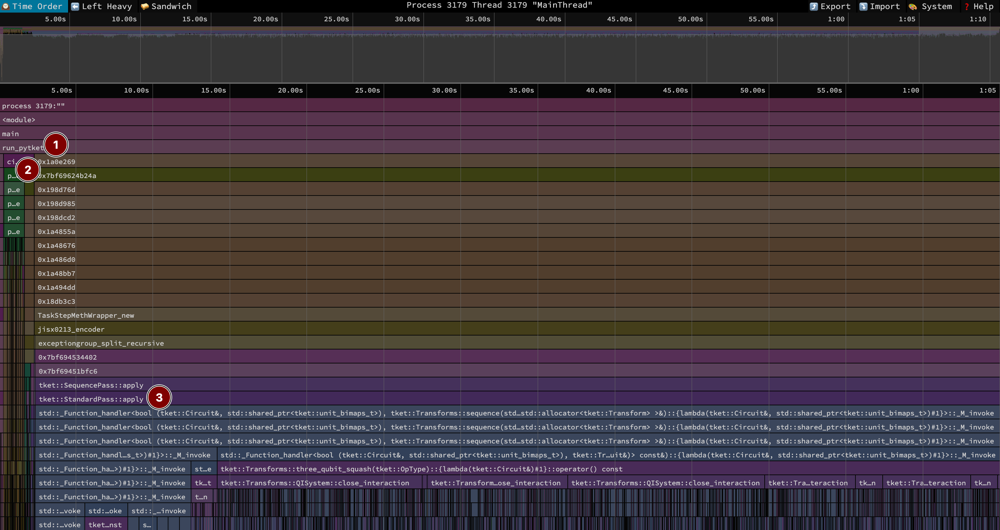
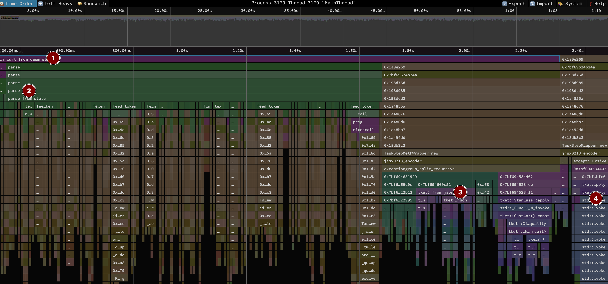
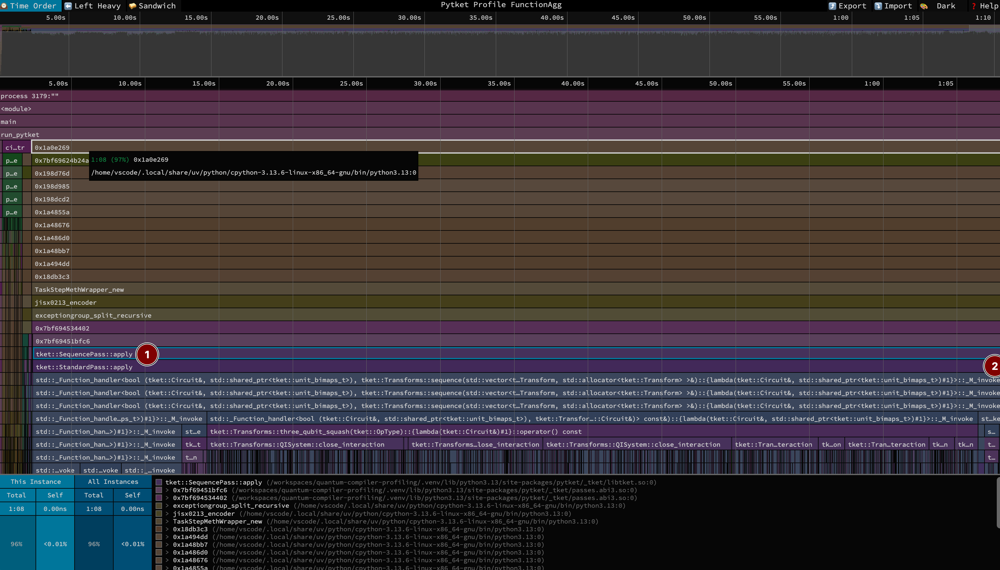
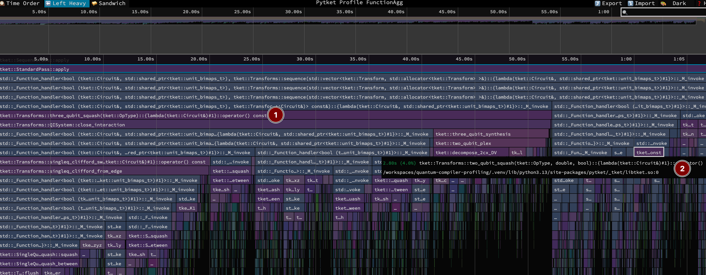
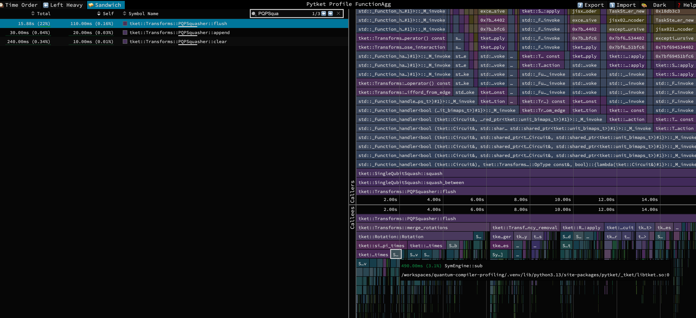

Profiling Quantum Compilers: pytket
For the next post in the quantum compiler profiling series, we will focus on pytket version 2.9.1. pytket is “a python module for interfacing with tket, a quantum computing toolkit and optimising compiler developed by Quantinuum.” At the time of writing, Quantinuum just released their next generation quantum software stack, which includes tket2. But it’s still a work in progress, so for now, I will focus on the existing version.
Overview
As we did last time, we begin with a top-level view of the compilation. This took a total of 1 minute and 10 seconds. You can inspect this function-aggregated view in speedscope here.

The benchmark harness code is below, with the code annotated with the labels in the image above.
def run_pytket(qasm): #(1)
from pytket.passes import (
SequencePass,
AutoRebase,
FullPeepholeOptimise,
)
from pytket.predicates import CompilationUnit
from pytket.circuit import OpType
from pytket.qasm import circuit_from_qasm_str
compilation_unit = CompilationUnit(circuit_from_qasm_str(qasm)) #(2)
passes = [
FullPeepholeOptimise(),
AutoRebase({OpType.Rx, OpType.Ry, OpType.Rz, OpType.CX, OpType.H}),
]
SequencePass(passes).apply(compilation_unit) #(3)
return compilation_unit.circuitThe bulk of the time is in two spots:
- 2 [2%, 1.99s] in
circuit_from_qasm_strparsing the 25K line QASM file into pytket’s in-memory circuit representation. - 3 [96%, 1m 8s] in
applyactually optimizing the circuit.
Not visible is the python import time, which at 320ms was less than half a percent of the runtime, but on the same order that Qiskit spends on imports.
Parsing QASM
Although a small fraction of the overall runtime, I am curious to explore how tket is parsing QASM and how that compares to other libraries. Zooming in on that segment in the timeline view:

At the highest-level, 1 is the circuit_from_qasm_str function in pytket, reproduced here:
def circuit_from_qasm_str(qasm_str: str, maxwidth: int = 32) -> Circuit: # (1)
global g_parser # noqa: PLW0602
...
# (3) (2)
# ^ ^
circ = Circuit.from_dict(g_parser.parse(qasm_str))
cpass = scratch_reg_resize_pass(maxwidth) # <-- (4)
cpass.apply(circ)
return circHere, g_parser is an instance of a lark parser. Lark is pure-python parser library. The grammar1 for QASM2 parsing in pytket is here. What is most interesting is what representation tket parses into. The g_parser.parse method at 2 takes in a QASM string and returns a python dict that is effectively JSON. Tket has a JSON format for circuits that is uses for serialization. For the QFT circuit we are compiling, this is (mostly) a series of commands, but not at all compact (repeating keys, numeric params as strings); an excerpt:
1 Lark is also used in QuEra’s Bloqade circuit dialect for parsing qasm.
{"commands":[{"args":[["q",[99]]],"op":{"type":"Ry","params":["((pi / 2))/pi"]}},{"args":[["q",[99]]],"op":{"type":"Rx","params":["(pi)/pi"]}},{"args":[["q",[99]]],"op":{"type":"Rz","params":["((pi / 4))/pi"]}},{"args":[["q",[99]],["q",[98]]],"op":{"type":"CX"}},{"args":[["q",[98]]],"op":{"type":"Rz","params":["(((-pi) / 4))/pi"]}},....As a result, what started as 427 kilobyte QASM file expands to 8.6 megabyte JSON blob!
In 3, the Circuit.from_dict call converts the python dictionary to a JSON string (again overhead!) and ultimately parses it into the in-memory circuit representation. Even though these layers are in C++, there’s just a lot of overhead parsing all those strings (and I imagine was a partial motivation for Jeff).
Lastly, in 4, there is a pass to ensure all classical registers bit width is below a desired target. I’m guessing this is to better map to hardware, e.g. 64-bit classical registers make sense, 774-bit registers don’t.
The take-away I have here is that even transient intermediary representations that might make sense as small scale/for human use (JSON) end up with performance implications at relatively modest scales.
Compiling
Onwards to the fun stuff.

To understand the profile, let’s look back at benchmark harness code. This uses two passes from pytket
- 1
FullPeepholeOptimize“pass applies Clifford simplifications, commutes single-qubit gates to the front of the circuit and applies passes to squash subcircuits of up to three qubits. This provides a one-size-approximately-fits-all “kitchen sink” solution to Circuit optimisation.” (from docs). Peephole optimization is a concept from classical compilers, where you look at small program segments (like looking through a peephole) and locally optimize them. 2 - 2
AutoRebaseconverts to the target gateset we use in the benchmarks to ensure an apples-to-apples comparison. Note this only took 200ms, so isn’t actually visible on the image above. But I put the label where you’d end up finding it by zooming or Ctrl+F searching for “rebase”.
2 I suspect the debug symbols get a little messed up, as full_peephole_optimise does show up as 30ms of the call stack, but there are seconds of samples in the underlying passes that I see it calling from the source code. I don’t feel like building locally with full debug symbols, so assuming things map back as you’d expect.
Full Peephole Optimize
Fortunately, there’s a nice single spot in the C++ source that shows what internal passes full peephole optimization uses. Reproducing here
Transform full_peephole_optimise(bool allow_swaps,
OpType target_2qb_gate) {
switch (target_2qb_gate) {
case OpType::CX:
return (
synthesise_tket() >> two_qubit_squash(false) >>
clifford_simp(allow_swaps) >> synthesise_tket() >>
two_qubit_squash(allow_swaps) >> three_qubit_squash() >>
clifford_simp(allow_swaps) >> synthesise_tket());
/* snip */
}
}By switching to the left-heavy 3 view, we see three_qubit_squash 1 is by far the longest running at 52 seconds. The mouse-overed two_qubit_swash 2 (which is called twice) runs for 4.5 seconds.
3 Recall, the left-heavy view is not time-ordered, and insteads pushes the longer running segments of the sampled call stack to the left of the chart.

Focusing on three_qubit_squash, it is defined here in C++, and is also documented as a standalone pass
Squash three-qubit subcircuits into subcircuits having fewer CX gates, when possible, and apply Clifford simplification.
Looking at the C++ code, it assumes all quantum operations in the circuit are single qubit or CNOT gates. It uses QISystem to track sets of 3-qubit interactions (represented by QInteraction). The pass walks the DAG representation of the circuit in topological order. For each quantum operation, it checks if it overlaps with an existing set of 3-qubit interactions. If so, it combines with them. If its a fresh interaction independent of any prior ones, it starts a new QInteraction. Otherwise, its an operation that would cause an existing QInteraction to exceed 3-qubits (so overlaps with say 1 of the existing 3 qubits). In this cases, it “closes” the interaction, taking the set of gates that had been combined to this interaction and replacing with an equivalent unitary decomposed to a canonical sequence of a few gates. So in short, contiguous runs of 3-qubit interactions get decomposed to a few gates. This is an interesting comparison to what we saw in the Qiskit post, where things like commutative cancellation/re-ordering via algebraic gate identities was the strategy. This pytket pass is more like a synthesis approach.
The close_interaction function doing that synthesis dominates the runtime. From there, time is spent in three_qubit_synthesis (20%) which does a numerical decomposition of three qubit gates and singleq_clifford_sweep() (40%) (care of clifford_simp) which leverages Clifford gate rules to simplify.
My only observation poking around this area is a few lengthy calls to PQPSquasher::flush. The PQPSquasher class “squashes chains of single qubit gates to minimal sequences of any two type of rotations (Rx, Ry or Rz), using Euler angle decompositions” (from here). Searching for this in the Sandwhich view of speedscope, I see 15 seconds of CPU time (22% of the entire runtime) here, even though only 110 ms of self-time in that function.

Further poking in the Callee side of the Sandwich view, I see a bunch of SymEngine:: functions, which is a third-party library for symbolic mathematics, that can be used as a backend for Sympy. For this context, it shows up when merging rotations in the PQPSquasher class (see total_angle in merge_rotations). I’m not going to dig much futher, but I’m not suprised there is some overhead for doing symbolic level mathematics. I don’t know if there is any caching or other performance optimization strategies with SymEngine. Perhaps there is a way to disable and switch to floating point calculations instead of that is sufficient for your use case. But it is interesting to the circuits Qiskit and tket generate:
rz(3.998046875*pi) q[91];
cx q[98],q[92];
rz(0.015625*pi) q[93];
cx q[97],q[94];
rz(3.75*pi) q[95];
cx q[99],q[91];
rz(3.9921875*pi) q[92];
cx q[97],q[93];
rz(0.0625*pi) q[94];
cx q[96],q[95];cx q[93],q[92];
rz(-3*pi/4) q[92];
ry(pi/2) q[92];
rz(1.5707933307386703) q[92];
cx q[99],q[91];
rz(-pi/512) q[91];
cx q[99],q[91];
rz(pi/512) q[91];
cx q[98],q[91];
rz(-pi/256) q[91];
Above are random exceprts of in the middle of the compiled QFT circuit (exported to QASM). Both have single qubit rotation angles that are multiple of pi, but qiskit lagely keeps them as simple fractions (but not all!). tket has them as some floating point multiple of pi. So qiskit must have an faster internal representation that is either symbolic or tracks the fraction representation relative to pi.
A final Bottoms up view
One last note on tket, check out the bottom’s up view sorted by self-time
A little over 7 seconds is spent allocating and freeing memory and this is largely in C++ code. This is just a reminder that just using a compiled language is not a guarantee of speed. How you organize your data and use memory has a big impact4.
4 One drive-by thing I noticed was a use of std::list in the PQPSquash code here. std::list is a linked list, so each item is a new memory allocation. Although the code does rely on re-ordering/removing elements in the list, I bet a flat memory structure like std::vector wouldn’t be too hard and could perform much better.
TL;DR
The vast majority of the runtime was spent in the FullPeepholeOptimise pass, particularly within the three_qubit_squash routine. This pass identifies contiguous blocks of 3-qubit interactions and re-synthesizes them into a more optimal gate sequence. A significant portion of this synthesis time is spent in symbolic math routines for simplifying single-qubit rotations.
Also of note is a 20x size overhead in parsing QASM; the 427 KB input file is first converted into an 8.6 MB JSON representation before being loaded into the final in-memory circuit.
I’m looking forward to seeing what tket2 does to improve on these areas!
AI Disclaimer: I’ve used LLMs to review and give feedback on this post, but the original content was written by me.